Media Manager
Once you get your system set up for OpenLP you will be ready to add content to your Service Manager. This will all happen through the Media Manager. The Media Manager contains all the Bibles, Songs, Presentations, Media, and Custom Slides that you will project through OpenLP.
If you don’t see the “Songs”, “Bibles” and other media items in the Media Manager, then refer to The Media Manager appears to be missing some features in the troubleshooting guide.
Songs
Clicking on Songs in the Media Manager will display the songs media item. The songs media item shows a list of all the songs in the songs database.

Toolbar
 Add song:
Add song:- Open the song edit dialog to add a new song.
 Edit song:
Edit song:- Open the song edit dialog to make changes to the selected song.
 Delete song:
Delete song:- Remove the selected song(s) from the song list.
 Preview song:
Preview song:- Send the selected song to the Preview Slide Controller.
 Send song live:
Send song live:- Send the selected song to the Live Slide Controller to be shown on the display screen.
 Add song to service:
Add song to service:- Add the selected song(s) to the Service Manager. Songs can also be added to the Service Manager by means of drag and drop from the Media Manager.
- Maintain authors, topics and books:
- Open the song maintenance dialog to add, edit or delete authors, topics or song books.
Note: Right-clicking on a song in the list will display some of the same options.
Search
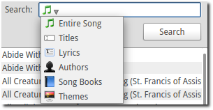Clicking on the icon in the search box displays a list of search options. The following options are available:
 Entire Song:
Entire Song:- Search the title, lyrics and comments fields.
 Titles:
Titles:- Search the title field only.
- Lyrics:
- Search the lyrics field only.
 Authors:
Authors:- Search the associated authors.
 Themes:
Themes:- Search the assigned themes.
Click the Search button to perform a search and display the results in the song list.
Bibles
Clicking on Bibles in the Media Manager will display the Bibles media item. The Bibles media item shows Bible verses and provides a search function to find Bible verses and add them to the Service Manager.
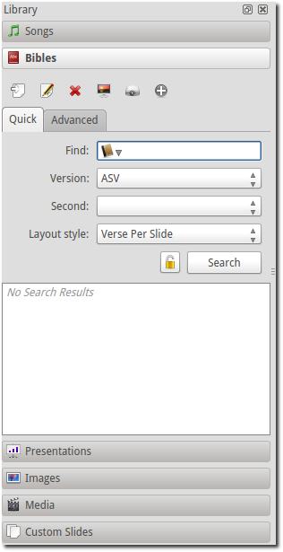Toolbar
- Edit the selected bible:
- Edit meta data or book names of the selected bible.
 Import Bible:
Import Bible:- Import Bibles from a number of formats. This is discussed in detail on the Bible Import Wizard page.
- Preview verses:
- Send the selected verses to the Preview Slide Controller.
- Send verses live:
- Send the selected verses to the Live Slide Controller to be shown on the display screen.
- Add verses to service:
- Add the selected verses to the Service Manager. Verses can also be added to the Service Manager by means of drag and drop from the Media Manager.
Note: Right-clicking on a selection of verses will display some of the same options.
Quick Search Tab
The following options are available on the quick search tab:
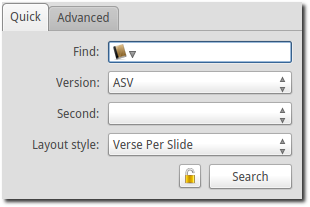- Find:
Clicking the icon in the Find box displays a list of search options. The following options are available:
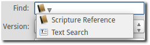
 Scripture Reference:
Scripture Reference:Search for a specific verse using a scripture reference format. Below is some examples on supported formats:
- Book Chapter
- Book Chapter-Chapter
- Book Chapter:Verse-Verse
- Book Chapter:Verse-End (this will display verses to the end of the chapter)
- Book Chapter:Verse-Verse, Verse-Verse
- Book Chapter:Verse-Verse, Chapter:Verse-Verse
- Book Chapter:Verse-Chapter:Verse
Note that the separators might change depending on the language chosen for OpenLP. See and customise separators under on the Bibles tab.
A detailed description of the format and how it is parsed by OpenLP can be read In the OpenLP API documentation.
If an invalid format is used for a search a popup window will show the examples also shown above.
- Text Search:
- Search by a keyword or words. Use more words to narrow down the list of results. If you search for “Jesus God” it searches sentences which contain both words, Jesus and God. If you search for “Jesus, God” separated by a comma, it searches for sentences which contain at least one of the words, Jesus or God.
- Version:
- Once a Bible has been imported, it will be displayed in the drop down box. Select a version from the list of the Bibles.
- Second:
- If Display second Bible verses has been selected in the Bibles configuration, this option will be available. This is used to display another version of the Bible for comparison. Both versions will be displayed. If there is not enough space on one slide, the Second verses will be displayed on the next slide.
- Layout Style:
The following options are available to set how Bible verses are displayed:
- Verse Per Slide:
- Display one verse per slide.
- Verse Per Line:
- Start each verse on a new line until the slide is full.
- Continuous:
- Verses flow together, separated by verse number and chapter if chapter is selected to show above.
This setting is also accessible in on the Bibles tab.
Note: Changes to layout style do not affect verses already in the Service Manager.
- Keep/Clear Results:
- Normally, when a search is run, the previous verses are cleared. To retain the previous set of verses, toggle this button.
Click the Search button to perform a search and display the results in the verse list.
Advanced Tab
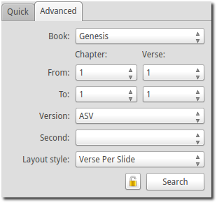The Advanced tab is convenient for selecting Bible verses by book, chapter and verse from a set of drop down boxes.
- Book:
- Click on the drop down box and select a book from the list.
- Chapter/Verse:
- Select the From chapter and verse, and the To chapter and verse.
Note Version, Second and Layout Style are the same as in the Quick search tab.
Click the Search button to perform a search and display the results in the verse list.
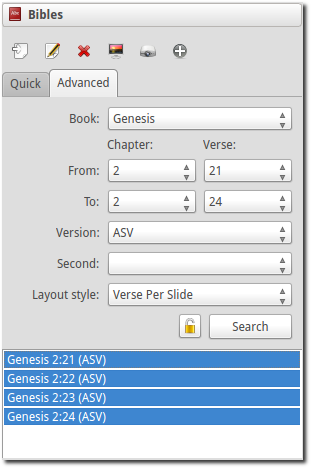Presentations
Clicking on Presentations in the Media Manager will display the presentations media item. The presentations media item shows a list of imported presentations.
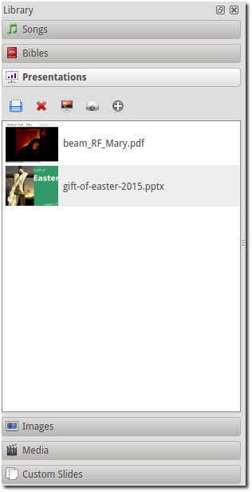Toolbar
 Load presentation:
Load presentation:- Import a presentation. Presentations need to be imported in order to control them from within OpenLP.
- Delete presentation:
- Removes the selected presentation from the list. Note that this does not delete the original presentation from the disk.
- Preview presentation:
- Send the selected presentation to the Preview Slide Controller.
- Send presentation live:
- Send the selected presentation to the Live Slide Controller to be shown on the display screen.
- Add presentation to service:
- Add the selected presentation to the Service Manager. Presentations can also be added to the Service Manager by means of drag and drop from the Media Manager.
Notes: Right-clicking on a presentation will display some of the same options.
Presentation items can be dragged from the desktop (or any folder) into the Presentation media manager plugin. This allows the selected items to be loaded more quickly. If a folder is selected, all the contacts of the folder will be added. When the items are added, only items with the correct file suffix for the plugin will be loaded. If you try to drop a presentation into the images folder, an error message will be generated.
In Presentations configuration it is possible to enable Allow presentation application to be overridden, which shows a dropdown box which gives you the option to select the presentation application you want to use. The default is Automatic, but you can choose any available presentation application. Note that this can lead to unexpected behavior if the application chosen is not compatible with the presentation.
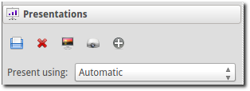Images
Clicking on Images in the Media Manager will display the images media item. The images media item shows a list of imported images.
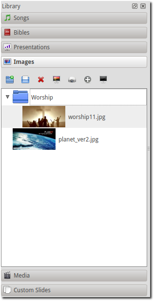Toolbar
- Add group:
- Opens a dialog where a new image group can be added.
- Load image:
- Import one or more images. Images need to be imported in order to be used in OpenLP.
- Delete images:
- Removes the selected image(s) from the list. Note that this does not delete the original image(s) from the disk.
- Preview image:
- Send the selected image(s) to the Preview Slide Controller.
- Send image live:
- Send the selected image(s) to the Live Slide Controller to be shown on the display screen.
- Add image to service:
- Add the selected image(s) to the Service Manager. Images can also be added to the Service Manager by means of drag and drop from the Media Manager.
- Replace live background:
- Replace the current live theme background with the selected image. This has effect until the theme changes, or the Remove Backgound button is clicked.
Notes: Right-clicking on an image will display some of the same options.
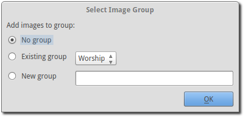When an image is added to the mediamanager, a dialog will ask in which group the image should be placed. The options are No group, Existing group or New group.
Images can be dragged from the desktop (or any folder) into the Images manager plugin. This allows the selected items to be loaded more quickly. If a folder is selected, all the contacts of the folder will be added. When the items are added, only items with the correct file suffix for the plugin will be loaded. If you try to drop a presentation into the images folder, an error message will be generated.
Media
Clicking on Media in the Media Manager will display the media item for media. The media item shows a list of imported audio or video files.
Note: On some computers OpenLP has trouble displaying videos. Please read the Troubleshooting for tips on how to resolve these issues.
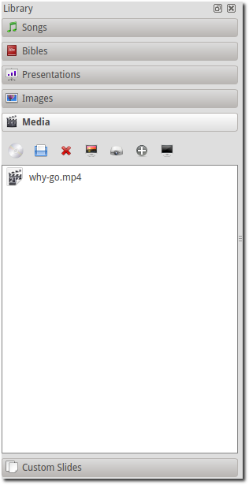Toolbar
- Load CD/DVD:
- Import mediaclip from audio CD or DVD. This feature only works if VLC is installed on the computer and enabled in OpenLP. See Players for how to configure media players. Clicking the icon will bring up a window where you can load a DVD or audio CD, select a track and a range and save it as a named media clip. Note that the audio CD or DVD is still required when playing the media clip, even if the media clip is saved to a service file.
- Load media:
- Import one or more media files. Media files need to be imported in order to be used in OpenLP.
- Delete media:
- Removes the selected media file(s) from the list. Note that this does not delete the original media file(s) from the disk.
- Preview media:
- Send the selected media to the Preview Slide Controller.
- Send media live:
- Send the selected media to the Live Slide Controller to be shown on the display screen.
- Add media to service:
- Add the selected media to the Service Manager. Media can also be added to the Service Manager by means of drag and drop from the Media Manager.
- Replace live background:
- Replace the current live theme background with the selected media. This has effect until the theme changes, or the Remove Background button is clicked.
Notes: Right-clicking on a media file will display some of the same options.
Media items can be dragged from the desktop (or any folder) into the Media manager plugin. This allows the selected items to be loaded more quickly. If a folder is selected, all the contacts of the folder will be added. When the items are added, only items with the correct file suffix for the plugin will be loaded. If you try to drop a presentation into the images folder, an error message will be generated.
In Media configuration it is possible to enable Allow media player to be overridden, which shows a dropdown box which gives you the option to select the media player you want to use. The default is Automatic, but you can choose any available player.
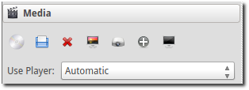Custom Slides
Clicking on Custom Slides in the Media Manager will display the custom slides media item. The custom slides media item shows a list of custom textual items. Custom slides are useful for creating unstructured text items, such as liturgy or prayers.
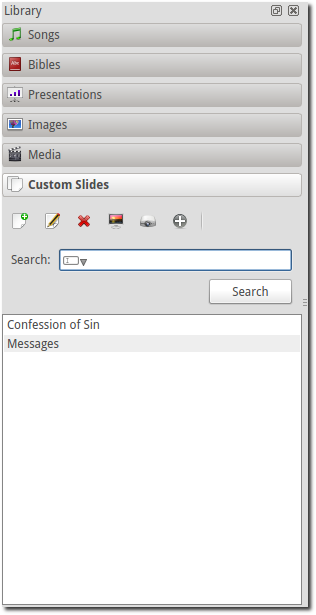Toolbar
- Add custom slide:
- Open the song edit dialog to add a new custom slide.
- Edit custom slide:
- Open the song edit dialog to make changed to the selected new custom slide.
- Delete custom slide:
- Remove the selected custom slide(s) from the list.
- Preview custom slide:
- Send the selected custom slide to the Preview Slide Controller.
- Send custom slide live:
- Send the selected custom slide to the Live Slide Controller to be shown on the display screen.
- Add custom slide to service:
- Add the selected custom slide(s) to the Service Manager. Custom slides can also be added to the Service Manager by means of drag and drop from the Media Manager.
Note: Right-clicking on a custom slide in the list will display some of the same options.